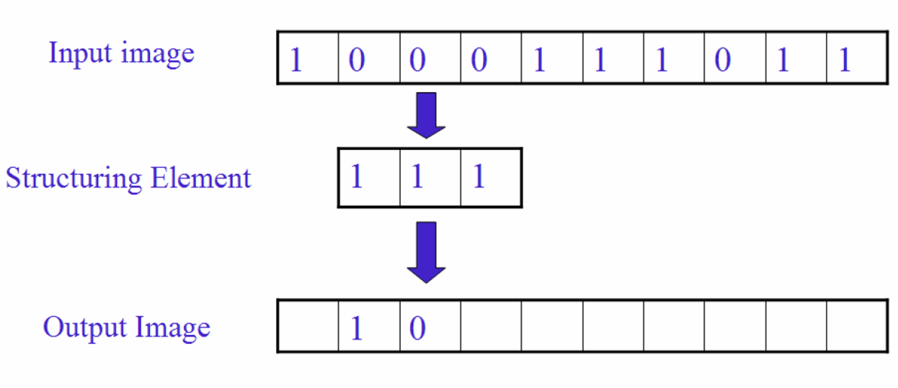
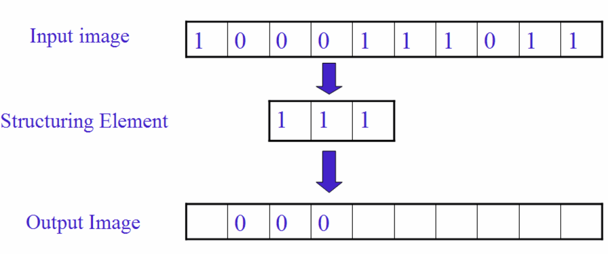
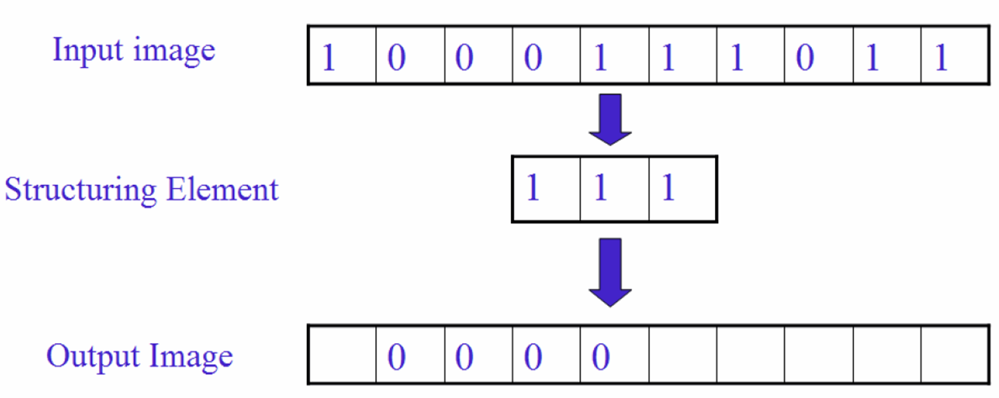
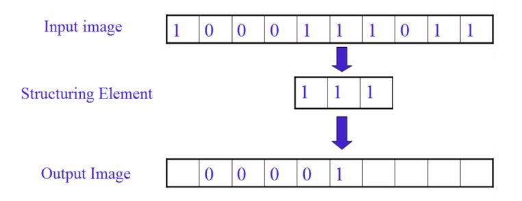
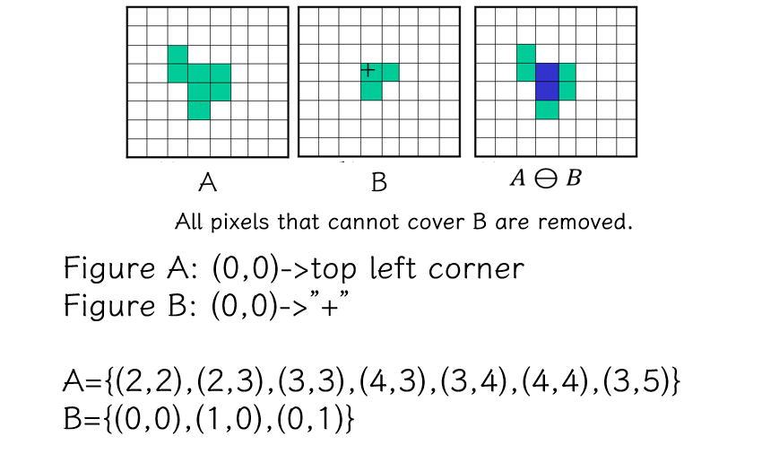
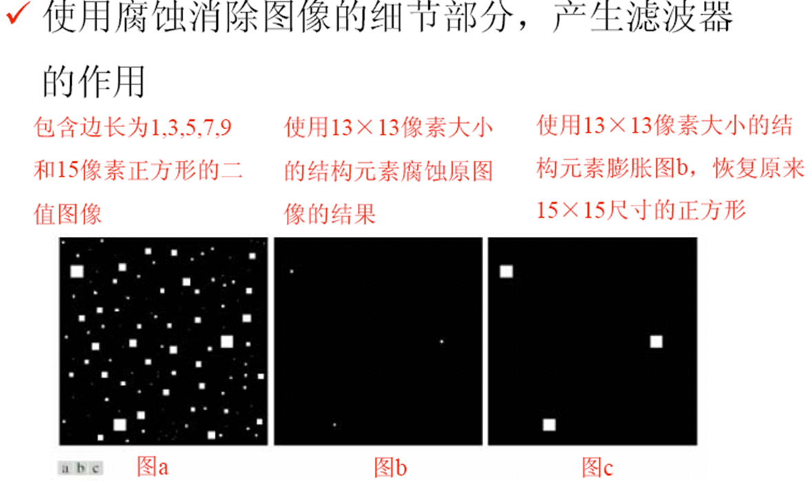
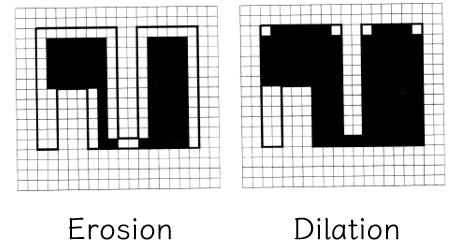
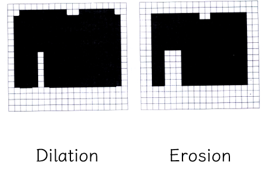
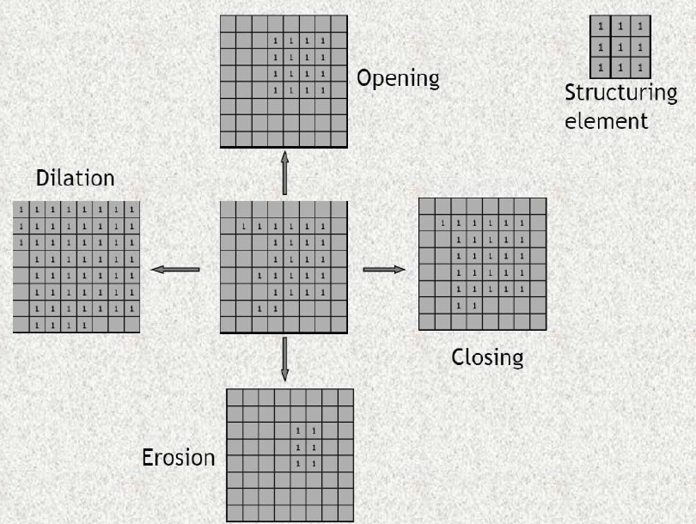

2 二值图像与形态学¶
约 1780 个字 预计阅读时间 9 分钟
本章概述
二值图像 | Binary image 图像二值化 | Image binarization 形态学操作 | Morphological operation
- 集合的定义 | Definition of set
- 腐蚀 | Erosion
- 膨胀 | Dilation
- 开运算 | Opening
- 闭运算 | Closing
应用 | Application
如何从灰度图转为二值图像？ 为什么需要二值图像（实际应用中二值化能把不重要的信息去掉）
Binary Image¶
灰度图与二值图像的差别如下图所示：

二值图像（Binary Image）中像素（Pixel）的值只有 {0,1} 或者 {0,255}，编程中我们一般用 {0,255} 来构造二值图像。
二值图像的优缺点：
-
优点：
- 更小的内存需求
- 运行速度更快
- 为二值图像开发的算法往往可以用于灰度级图像
-
缺点：
- 应用范围有限；
- 无法推广到三维空间中
- 表现力欠缺，不能表现物体内部细节
- 无法控制对比度
Image binarization¶
- 设置一个阈值 Threshold，比阈值小的置为 0, 比阈值大的置为 255.
- 如何选取合适的 threshold?
基本思想：将二值化得到的二值图像视为两部分，一部分对应前景（Foreground），另一部分对应背景（Background）。尝试找到一个合适的threshold使得到的前景和背景的内部方差最小，而它们之间的方差则最大。（下面的推导可看出，这二者是等价的）
Otto 大津算法推导
(\(N\) 是像素总个数，\(N_{Fgrd}\) 是给定 T 的情况下属于前景的像素个数)
简化版推导
- 具体过程
- Step 1: 确定原始图像中像素的最大值和最小值；
- Step 2: 最小值加 1 作为 threshold 对原始图像进行二值化操作；
- Step 3: 根据对应关系确定前景和背景，分别计算当前 threshold 下的内部协方差和外部协方差；（算一个就可以了）
- Step 4: 回到 Step 2 直到达到像素最大值；
- Step 5：比较找到最大外部和最小内部协方差对应的 threshold.
我们可以将前述 thresholding 策略推广到彩色图像，同时考虑 rgb 三个通道，我们就可以针对特定的色彩进行 thresholding 操作，
Example

大津算法存在问题：全局进行二值化操作不给力，如中间这幅图。

我们可以采用局部自适应操作来优化成为右边的图。具体思想：设定一个局部窗口，在整个图像上滑动该窗口；对于每一窗口位置，确定针对该窗口的threshold。
Morphology Operation¶
Morphology¶
-
形态学 Morphology
1960s 后期提出，研究动植物的结构与形态。形态学一般指生物学中研究动物和植物结构的一个分支
-
数学形态学 Mathematical morphology
基础理论：集合论。采用一种简单的非线性代数算子，主要用于二值图像，可扩展到灰度图像。用在噪声过滤、形状简化、细化、分割、物体描述等
用数学形态学（也称图像代数）表示以形态为基础对图像进行分析的数学工具
- 基本思想是用具有一定形态的结构元素(structure element) 去度量和提取图像中的对应形状以达到对图像分析和识别的目的。
- 形态学图像处理的数学基础和所用语言是集合论。
- 形态学图像处理的应用可以简化图像数据，保持它们基本的形状特性，并除去不相干结构。
- 形态学图像处理的基本运算有4个：膨胀、腐蚀、开操作和闭操作
Set Theory for Image¶


膨胀 | Dilation¶
A: 二值图像 B: 二值模板，称为结构元（structure element） \(A\oplus B = \{z| (B)_z \cap A \neq \varnothing \}\) 上式表示B进行平移与A的交集不为空
膨胀是将与物体“接触”的所有背景点合并到该物体中，使边界向外部扩张的过程。可以用来填补物体中的空洞。（其中“接触”的含义由结构元描述）
用行扫描的方式，作为 A 的一部分，希望把前景周围的一圈纳入到前景。
核心判断，交集不为空。 填充 B 的中心
一维情况：




二维情况：


显然，选择不同形状的结构元，结果也不同。
可以用来填补 gap.
腐蚀 | Erosion¶
腐蚀是一种消除边界点，使边界向内部收缩的过程。可以用来消除小且无意义的物体。
A: Binary image
B: binary template, structure element
Physical meaning: remove boundary, remove unwanted small objects.
一维情况：







Example


可以用第二张图验证代码是否正确。再利用算法二值化并操作。
padding 的思想：如果我们想从第一行开始扫描，但是这样有的就超出边界了，我们就把这一行再复制一遍，再从第一行开始扫描。
滤波器

Dilation and Erosion
- 膨胀
由B对A膨胀所产生的二值图像D是满足以下条件的点(x,y)的集合：如果B的原点平移到点(x,y)，那么它与A的交集非空。 - 腐蚀
由B对A腐蚀所产生的二值图像E是满足以下条件的点(x,y)的集合：如果B的原点平移到点(x,y)，那么B将完全包含于A中 - 膨胀与腐蚀是对偶的
\((A\ominus B)^c=\{z|(B_z)\sube A\}^c=\{z|(B_z)\cap A=\varnothing\}^c=\{z|(B_z)\cap A^c \neq \varnothing\}=A^c\oplus B\)
Application
A - erode(A) 得到边界

Note

Open¶
先腐蚀，后膨胀 \(A\circ B=(A\ominus B)\oplus B\)
Remove small objects, segment object at thin part, smooth boundary of large object but preserve its original area.


Close¶
先膨胀，后腐蚀 \(A \bullet B =(A\oplus B)\ominus B\)
Fill small holes, connect the neighboring objects, smooth boundary while preserving the area at most.


总结¶
